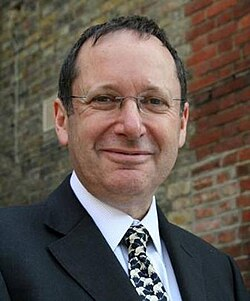

Bernard Silverman | |
|---|---|
 Silverman in 2008 | |
| Born | 22 February 1952 London, England[1] |
| Education | City of London School[2] |
| Alma mater | University of Cambridge |
| Known for | density estimation, nonparametric regression, functional data analysis |
| Awards | Mayhew Prize (1974) Smith's Prize (1976) Gold Medal International Mathematical Olympiad Guy Medal (Bronze, 1984) (Silver, 1997) COPSS Presidents' Award (1991) Fellow of the Royal Society |
| Scientific career | |
| Fields | Statistician |
| Institutions | University of Oxford |
| Thesis | Data Analysis: Some Theory and Practice (1978) |
| D. G. Kendall | |
{kind=link}
Sir Bernard Walter Silverman, FRS, FAcSS (born 22 February 1952) is a British statistician and former[3] Anglican clergyman. He was Master of St Peter's College, Oxford, from 1 October 2003 to 31 December 2009. He is a member of the Statistics Department at the University of Oxford, and has also been attached to the Wellcome Trust Centre for Human Genetics, the Smith School of Enterprise and the Environment, and the Oxford-Man Institute of Quantitative Finance. He has been a member of the Council of the University of Oxford and of the Council of the Royal Society.[4] He was briefly president of the Royal Statistical Society in January 2010, a position from which he stood down upon announcement of his appointment as Chief Scientific Adviser to the Home Office.[5] He was awarded a knighthood in the 2018 New Year Honours List, "For public service and services to Science".[6]
Education
Silverman was educated at the City of London School,[2] an independent day school in Central London, from 1961 to 1969, on a Carpenter Scholarship (similar to today's full bursary),[7] followed by Jesus College, Cambridge.[7]
Career
This biographical section is written like a résumé. (January 2021) |
- 1970–73 Undergraduate, Jesus College, Cambridge.
- 1973–74 Graduate Student, Jesus College, Cambridge.
- 1974–75 Research Student, Statistical Laboratory, Cambridge.
- 1975–77 Research Fellow of Jesus College, Cambridge.
- 1976–77 Calculator Development Manager, Sinclair Radionics Ltd.
- 1977–78 Junior Lecturer in Statistics, University of Oxford, and Weir Junior Research Fellow of University College, Oxford.
- 1978–80 Lecturer in Statistics, University of Bath.
- 1981–84 Reader in Statistics, University of Bath.
- 1984 and 1992–93 Head of Statistics Group, University of Bath.
- 1984–93 Professor of Statistics, University of Bath.
- 1988–91 Head of School of Mathematical Sciences, University of Bath.
- 1993–2003 Professor of Statistics, University of Bristol
- 1993–97 and 1998–99 Head of Statistics Group, University of Bristol
- 1999–2003 Henry Overton Wills Professor of Mathematics, University of Bristol
- 2000–03 Provost of the Institute for Advanced Studies, University of Bristol
- 2003–09 Master of St Peter's College, Oxford
- 2010– Senior Research Fellow, Smith School of Enterprise and the Environment, Oxford (part-time)
- 2010– Professorial Research Associate, Wellcome Trust Centre for Human Genetics, Oxford (part-time)
- 2010–17 Chief Scientific Adviser, Home Office
- 2018–22 Professor of Modern Slavery Statistics, Rights Lab, University of Nottingham[8]
Degrees and qualifications
- 1973 Bachelor of Arts, Cambridge. (Wrangler)
- 1974 Part III of Mathematical Tripos, Cambridge (with Distinction)
- 1977 Doctor of Philosophy, Cambridge
- 1989 Doctor of Science, Cambridge
- 1993 Chartered Statistician, Royal Statistical Society
- 2000 Bachelor of Theology, Southampton (First Class Honours) through STETS
Awards and honours
- 1970 Gold Medal, International Mathematical Olympiad
- 1974 Mayhew Prize for Mathematical Tripos Part III, University of Cambridge
- 1976 Smith's Prize, University of Cambridge
- 1984 Royal Statistical Society Guy Medal in Bronze
- 1985 Special Invited Paper, Institute of Mathematical Statistics
- 1988 Technometrics Special Discussion Paper, American Statistical Association
- 1991 Presidents' Award of the Committee of Presidents of Statistical Societies
- 1993 Fulkerson Lecturer, Cornell University
- 1995 Royal Statistical Society Guy Medal in Silver
- 1997 Fellow of the Royal Society
- 1999 Special Invited Paper, Institute of Mathematical Statistics
- 1999 Henri Willem Methorst Medal, International Statistical Institute
- 2000 Corcoran Lecturer, University of Oxford
- 2001 Member of Academia Europaea
- 2002 Original Member, Highly Cited Researchers database, ISI
- 2003 Honorary Fellow, Jesus College, Cambridge
- 2017 Honorary Doctorate of Science by the University of Bath[9]
- 2018 Knight Bachelor in the 2018 New Year Honours for public service and services to Science.[10]
Ecclesiastical career
Silverman was ordained in the Church of England as a deacon in 1999 and as a priest in 2000.[11] From 1999 to 2005, he was an honorary assistant curate of Cotham Parish Church in the Diocese of Bristol.[11] Between 2005 and 2009, he held Permission to Officiate in the Diocese of Oxford.[11] Then, from 2009 to 2015, he was an honorary assistant curate of St Giles' Church and St Margaret's Church, Oxford.[11] From 2015 to 2022, he held Permission to Officiate in both the Diocese of Oxford and in the Diocese of London.[11] He retired from ordained ministry in 2022.[3]
Books
- Green, P. J.; Silverman, B. W. (1994). Nonparametric Regression and Generalized Linear Models: A Roughness Penalty Approach. Chapman & Hall.
- Ramsay, J. O.; Silverman, B. W. (2002). Applied Functional Data Analysis: Methods and Case Studies. Springer-Verlag.
- Ramsay, J. O.; Silverman, B. W. (2005) [1997]. Functional Data Analysis (second, expanded and rewritten ed.). Springer-Verlag.
- Silverman, B. W. (1986). Density Estimation for Statistics and Data Analysis. Chapman & Hall. Bibcode:1986desd.book.....S.
- Silverman, B. W.; Vassilicos, J. C., eds. (2000). Wavelets: The Key to Intermittent Information?. Oxford University Press.
References
- ^ "Index entry". FreeBMD. ONS. Retrieved 30 December 2017.
- ^ a b "City of London School - Old Citizens". City of London School. Archived from the original on 9 May 2017. Retrieved 12 July 2018.
- ^ a b Silverman, Bernard (30 December 2022). "Resignation from Ministry in the Church of England" (PDF).
- ^ Council for 2008/9 of the Royal Society
- ^ "New Home Office Chief Scientific Adviser announced". Home Office Press Office. Archived from the original on 10 April 2010. Retrieved 19 February 2010.
- ^ Official 2018 New Years Honours List
- ^ a b "Q & A with Sir Bernard Silverman". John Carpenter Club. 17 April 2018. Retrieved 12 July 2018.
- ^ "Rights Lab". University of Nottingham. Retrieved 6 December 2018.
- ^ "Professor Bernard W. Silverman: oration". www.bath.ac.uk. Retrieved 1 October 2025.
- ^ "No. 62150". The London Gazette (Supplement). 30 December 2017. p. N2.
- ^ a b c d e "Bernard Walter Silverman". Crockford's Clerical Directory (online ed.). Church House Publishing. Retrieved 19 May 2017.